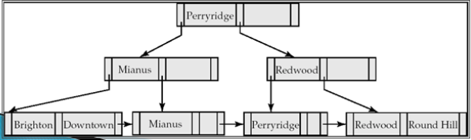

La búsqueda es similar a la de los árboles binarios. Se empieza en la raíz, y se recorre el árbol hacia abajo, escogiendo el sub-nodo de acuerdo a la posición relativa del valor buscado respecto a los valores de cada nodo. Típicamente se utiliza la búsqueda binaria para determinar esta posición relativa.
Procedimiento
- Situarse en el nodo raíz.
- (*) Comprobar si contiene la clave a buscar.
- Encontrada fin de procedimiento.
- No encontrada:
- Si es hoja no existe la clave.
- En otro caso el nodo actual es el hijo que corresponde:
- La clave a buscar k < k1: hijo izquierdo.
- La clave a buscar k > ki y k < ki+1 hijo iésimo.
- Volver a paso 2(*).
